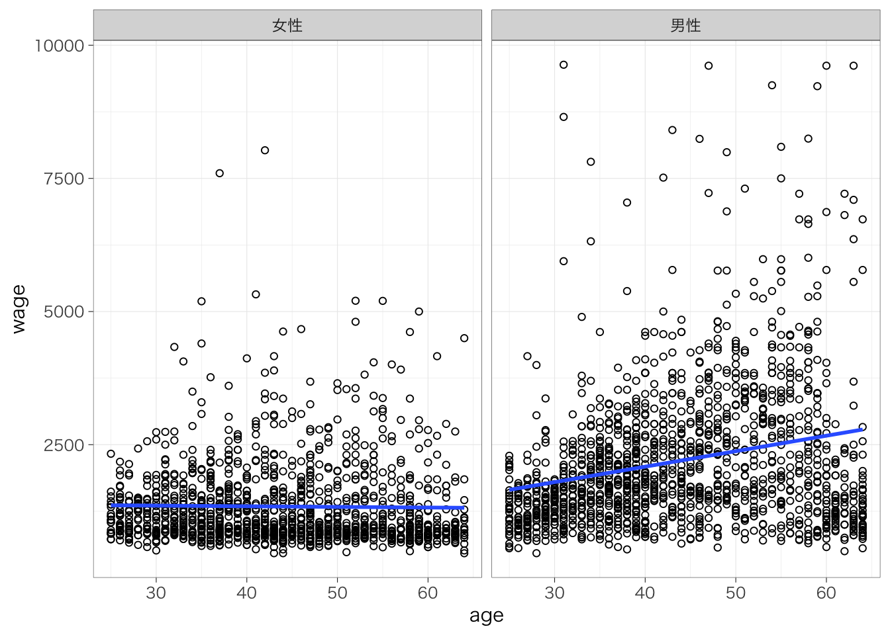
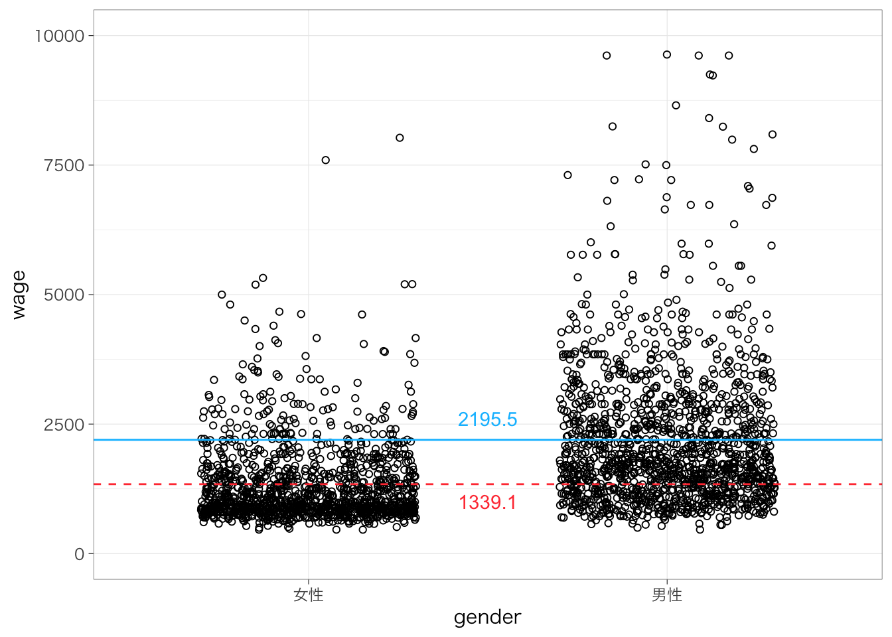
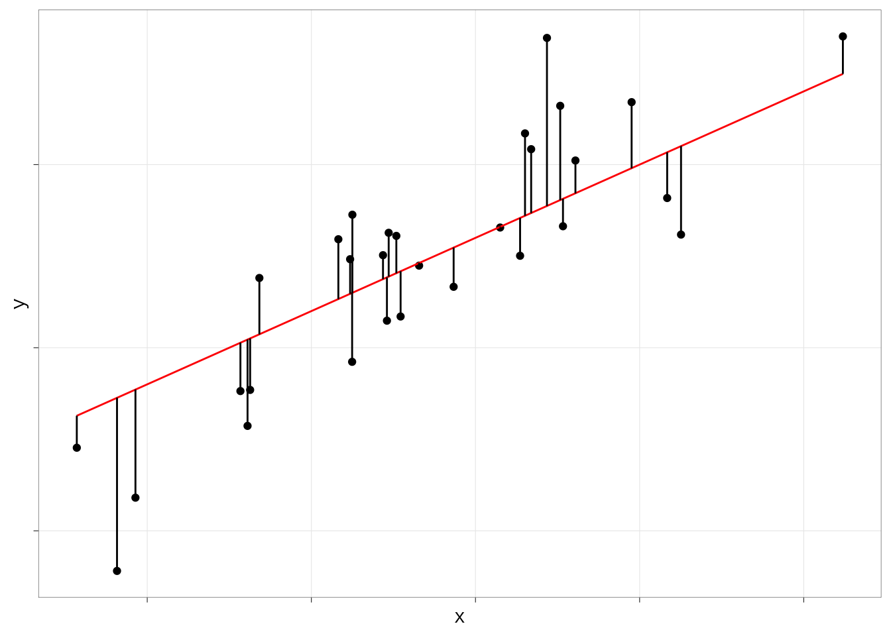
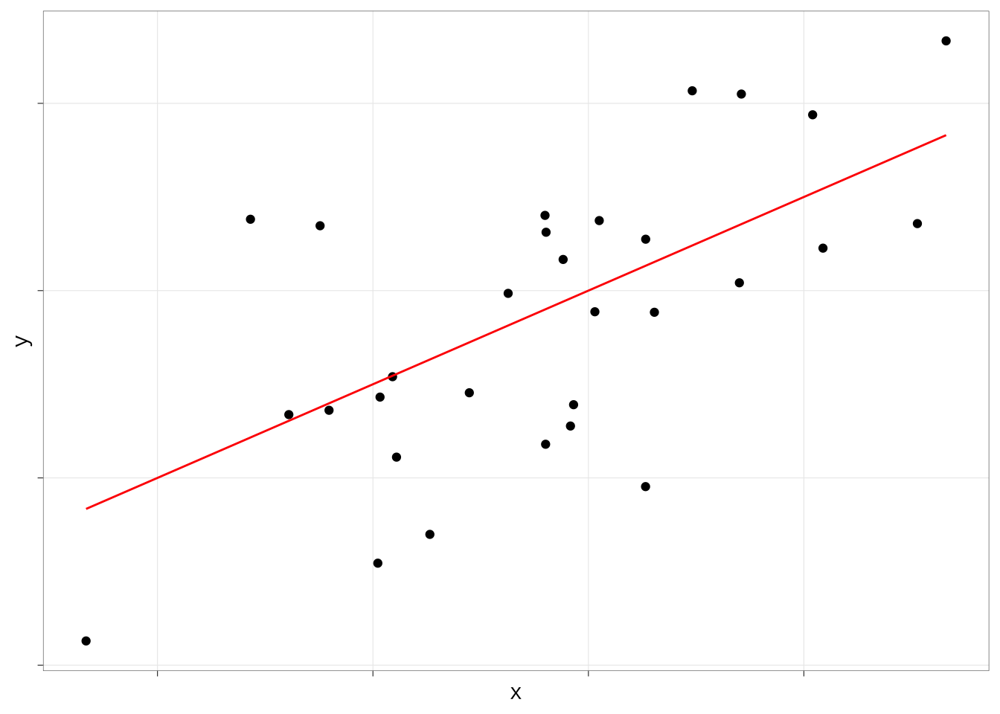
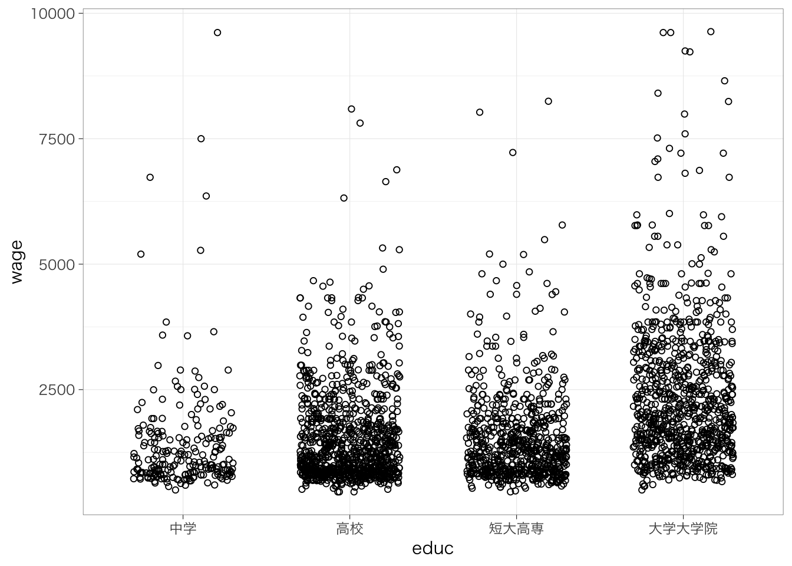
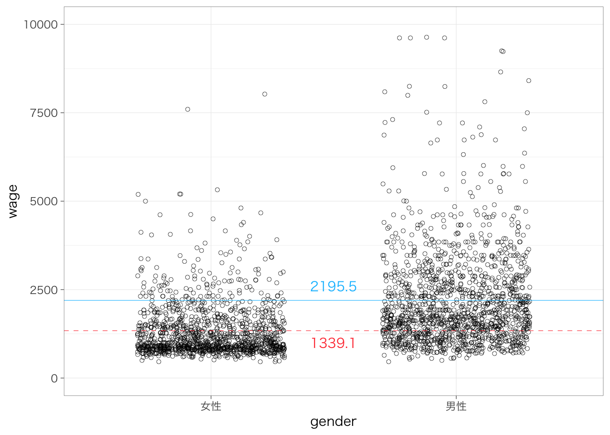

Chapter 7 回帰分析の基礎
本章では、回帰分析の基礎について説明する。
内容に入る前に、右上のプロジェクトのボックスの横が、前章で作成したプロジェクトの名前（たとえば、seminar_sociology_r）になっているかどうかを確認しておこう。なっていない場合は、右上のボックスをクリックして、「Open Project…」を選択し、前章で作成したRprojファイル（たとえば、seminar_sociology_r.Rprojといったような名前になっている）を選んで、プロジェクトを切り替えよう。
さらに、これまでの章で説明した以下のパッケージを読み込んだ上で、第4章で作成したデータを読み込んでpiaacというデータフレームに入れていることを前提とする。具体的には、以下のコードを実行しておく必要がある。
library(tidyverse)
library(gtsummary)
library(flextable)
piaac <- read_rds("data/piaac_sample_analytic.rds")第5章で確認したように、ggplotの設定を変更しておくことで見やすいグラフを作ることができる。ここでは以下のコードを実行している。
Macの場合：
theme_set(theme_bw(
base_family = "HiraginoSans-W3",
base_size = 11,
base_rect_size = 0.2,
base_line_size = 0.2
))Windowsの場合：
theme_set(theme_bw(
base_size = 11,
base_rect_size = 0.2,
base_line_size = 0.2
))7.1 回帰分析とは何か
7.1.1 散布図を眺める
数的思考力スコアが高いほど賃金（時給換算）が高いという傾向があるかどうかを知りたいとする。このとき、年齢を横軸、賃金を縦軸とする散布図を書いてみる。
piaac %>%
ggplot(aes(x = numeracy, y = wage)) +
geom_point(shape = 1)
なんとなく、数的思考力スコアが高いほど賃金が高い傾向があるようにみえる。この関係を1つの直線で要約するとしたらどのようになるだろう？この直線を示したのが次の図になる。
piaac %>%
ggplot(aes(x = numeracy, y = wage)) +
geom_point(shape = 1) +
geom_smooth(method = "lm", se = FALSE)## `geom_smooth()` using formula 'y ~ x'
7.1.2 回帰式の読み方
このように、2つの変数の関係を\(y = f(x)\)というような関数で表現する分析方法を指して、回帰分析 regression analysis/regression model という。とくに、今y軸に置かれている変数 （賃金）は、数的思考力スコアによって説明される変数であるという意味で、被説明変数 explained variableまたは従属変数 dependent variable、x軸に置かれている変数（数的思考力スコア）は、賃金を説明する変数であるという意味で、説明変数 explanatory variableまたは独立変数 independent variableという。
今回の式は、次のようなかたちになる12。
\[ y = \beta_0 + \beta_1x \]
今の例の場合は、\(y\)は賃金、\(x\)は年齢である。\(\beta_k\)のことを係数 coefficient といい、なかでもとくに\(\beta_0\)のことを切片 intercept、\(\beta_1\)のことを傾き slope という。傾きは、\(x\)が1単位高いときに\(y\)がどれだけ高いかを表す。
ここで関心があるのは傾きの値である。これが正であれば、\(x\)が高いほど\(y\)は高いという正の関係を表すし、負であれば、\(x\)が高いほど\(y\)は低いという負の関係を表す。絶対値が大きいほど、\(x\) 1単位の変化に対して \(y\)がより大きく変わるということを表すので、たんに正か負かというだけでなく、その値も重要である。
今回の場合は係数はどうなるだろうか？線形回帰分析を推定するときのコマンドがlm()である。lm(data = xx, formula = )という書き方になる。formula =の部分は省略しても大丈夫。
lm(data = piaac, formula = wage ~ numeracy)##
## Call:
## lm(formula = wage ~ numeracy, data = piaac)
##
## Coefficients:
## (Intercept) numeracy
## -521.073 7.849(Intercept)の部分が切片\(\beta_0\)、numeracyの部分がnumeracyの傾き\(\beta_1\)にそれぞれ対応する。したがって、賃金と年齢の関係は以下の式のように表されるということを意味する：
\[ y = -521.1 + 7.8x \]
7.1.3 （発展）回帰式の決め方：最小二乗法
もちろん、上記の回帰式は散布図をみて直観でえいやっと式の値を決めたのではなく、全体の傾向をもっともよく要約するような係数を推定している。その係数の推定方法を最小二乗法 ordinary least square, OLSという。
最小二乗法の意味は図にするとわかりやすい。例えば、次のような散布図と、そこに引いた直線を考えよう。

このとき、散布図の各点の座標を\((x_i, y_i)\)と表すことにしよう。すると、各点のy座標の位置\(y_i\)は、（1）回帰直線の式に\(x_i\)を当てはめた値と、（2）そこからのずれ（\(e_i\)とする）の和として表すことができる。すなわち：
\[ y_i = \beta_0 + \beta_1x_{i} + e_i \]
この\(e_i\)というのは、散布図の点からx軸に垂線を下ろしたときの、回帰直線との交点までの距離を表している。図で考えると次のようになる。

ずれ\(e_i\)のことを、残差（residuals）という。散布図に直線を引く方法はたくさんあるのだが、最小二乗法では、上記の残差の二乗和を最も小さくするような直線が散布図全体の傾向をもっともよく反映する直線だとみなして、切片と傾きのパラメータを推定する。式で書くとつぎのようになる。
\[ \sum_{i = 1}^N e_i^2 = \sum_{i = 1}^N(y_i - (\beta_0 + \beta_1x_{i}))^2 \]
この式を最小にするような\(\beta_0, \beta_1\)を求めるということになる。上式は\(\beta_0, \beta_1\)に関して下に凸な二次関数であるので、\(\beta_0\)について微分した値と\(\beta_1\)について微分した値が同時に0になるような\(\beta_0, \beta_1\)というのが、上式を最小にするようなパラメータだ、ということになる。
\[ \left\{ \begin{align} \frac{\partial}{\partial\beta_0}\sum_{i = 1}^N(y_i - (\beta_0 + \beta_1x_{i}))^2 &= 0\\ \frac{\partial}{\partial\beta_1}\sum_{i = 1}^N(y_i - (\beta_0 + \beta_1x_{i}))^2 &= 0\\ \end{align} \right. \]
これより先のくわしい証明は省略するが、いずれにしてもポイントは、回帰直線は「回帰直線と各点とのずれ（残差）の二乗和が最も小さくなるように引かれた線だ」ということである。
7.1.4 母集団における関係の推測
今回分析しているのはあくまで母集団から抽出された標本（サンプル）であり、本当に知りたいのは母集団においても確かに関係があるといえるかどうかである。今回のサンプルにおいて推定された係数は偶然生じたものではなく、母集団においても確かに正であるということはできるのだろうか。
まずはいったん、回帰分析の結果をオブジェクトに格納しよう。
reg_res <- lm(data = piaac, wage ~ numeracy)結果は、summary()でよびだすことができる。呼び出した結果には、先ほどの疑問に答えるための情報が含まれている。
summary(reg_res)##
## Call:
## lm(formula = wage ~ numeracy, data = piaac)
##
## Residuals:
## Min 1Q Median 3Q Max
## -1774.0 -716.6 -304.5 373.9 8360.5
##
## Coefficients:
## Estimate Std. Error t value Pr(>|t|)
## (Intercept) -521.0726 151.8525 -3.431 0.000609 ***
## numeracy 7.8491 0.5098 15.396 < 2e-16 ***
## ---
## Signif. codes: 0 '***' 0.001 '**' 0.01 '*' 0.05 '.' 0.1 ' ' 1
##
## Residual standard error: 1143 on 2726 degrees of freedom
## Multiple R-squared: 0.08, Adjusted R-squared: 0.07966
## F-statistic: 237 on 1 and 2726 DF, p-value: < 2.2e-161列目のEstimateの列には、先ほどみたように係数の値が表示される。
2列目のStd. Errorの列が標準誤差 standard errorを表し、得られた係数のばらつき（標準偏差）を示している。標準誤差は、次に述べるp値の計算に使われている13。
4列めのPr(>|t|)の列がp値 p-valueを表している。p値は「もし母集団において係数が0であるという帰無仮説が正しいとしたときに、今回のような係数の値となる確率」を表している。この値が十分に低いのならば、帰無仮説を棄却して、たしかに母集団においても係数は0でなさそうだ（正あるいは負だ）、ということを自信をもって主張できるということになる。
numeracyの行のp値は0.001よりずっと低いことがわかる。つまり、母集団において年齢の係数が0であったとしたら、今回のような係数の値が得られる確率はとても低い（0.001 = 0.1%未満）、ということである。
この確率がどれくらい低ければ自信をもって関係があると言えるのか？ということについて、慣習的には、0.05という基準が使われている。Rでは、0.05よりも小さければ（正確には0.01 ≤ p < 0.05）、p値の横に*という印がつく。同じようにして、0.01よりも小さければ（0.001 ≤ p < 0.01）**、0.001よりも小さければ（p < 0.001）、***という印がつく。
このように、「母集団において係数が0であったとしたら、今回のような係数の値が得られる確率は十分に低い（0.05未満である）」ことを慣習的に「統計的に有意」と略記（？）する。基本的には、統計的に有意でないならば、係数が正であったり負であったりしても、その結果を（母集団においても関係が正だ／負だ、というふうに）強く論じることはできないと考えておけばよい。
7.2 独立変数がカテゴリ変数の場合
7.2.1 2値のカテゴリ
線形回帰分析では、連続変数だけではなく、カテゴリ変数も扱うことができる。その例としてまず、性別によって賃金がどの程度異なるのかを知りたいとする。このとき、（無理やり）散布図を書くと、次のようになる。分布がわかりやすいように点は水平方向に少し散らして表示している。
piaac %>%
ggplot(aes(x = gender, y = wage)) +
geom_point(shape = 1, position = position_jitter(w = 0.3, h = 0)) +
ylim(0, 10000)
ここで得られた男性の平均値と女性の平均値をそれぞれ散布図に書き入れてみたのが次の図である。実線が男性の平均値、点線が女性の平均値を表している（コードはやや複雑なので、とくに実行する必要はありません）。
meandata <- piaac %>%
group_by(gender) %>%
summarize(mean_wage = mean(wage))
piaac %>%
ggplot(aes(x = gender, y = wage)) +
geom_point(shape = 1, position = position_jitter(w = 0.3, h = 0)) +
geom_hline(yintercept = meandata$mean_wage[1], lty = 2, color = "brown1") +
geom_hline(yintercept = meandata$mean_wage[2], color = "deepskyblue") +
annotate("text", x = 1.5, y = 1000, label = round(meandata$mean_wage[1], 1), color = "brown1") +
annotate("text", x = 1.5, y = 2600, label = round(meandata$mean_wage[2], 1), color = "deepskyblue") +
ylim(0, 10000)
いま、男性であれば1、女性であれば0をとる変数\(x\)を考えよう。このように、カテゴリ変数のカテゴリを区別するために便宜的に0/1の値を振った変数のことを、ダミー変数 dummy variableという。このとき、性別による賃金の違いを表す回帰式は次のようになる：
\[ y = \beta_0 + \beta_1x \]
回帰式のかたちは先ほどと同じとなる。傾き\(\beta_1\)は、女性（0）とくらべて男性（1）がどの程度賃金が高いのかを示している。実際、この係数を推定してみよう。
piaac <- piaac %>%
mutate(male_d = case_when(
gender == "男性" ~ 1,
gender == "女性" ~ 0
))reg_res <- lm(data = piaac, wage ~ male_d)
summary(reg_res)##
## Call:
## lm(formula = wage ~ male_d, data = piaac)
##
## Residuals:
## Min 1Q Median 3Q Max
## -1733.1 -612.4 -329.3 368.6 7438.4
##
## Coefficients:
## Estimate Std. Error t value Pr(>|t|)
## (Intercept) 1339.12 31.03 43.16 <2e-16 ***
## male_d 856.38 42.65 20.08 <2e-16 ***
## ---
## Signif. codes: 0 '***' 0.001 '**' 0.01 '*' 0.05 '.' 0.1 ' ' 1
##
## Residual standard error: 1112 on 2726 degrees of freedom
## Multiple R-squared: 0.1289, Adjusted R-squared: 0.1285
## F-statistic: 403.2 on 1 and 2726 DF, p-value: < 2.2e-16male_dというのが、性別が男性のときに1、女性のときに0をとる変数である。この係数は傾き\(\beta_1\)に対応し、切片（Intercept）は切片\(\beta_0\)に対応する。つまり、推定された式は次のようになる：
\[ y = 1339 + 856x \]
つまり、女性（x = 0）とくらべて男性（x = 1）の賃金は856円高いということを意味している。
この値が、先ほど散布図に示した男性の平均値と女性の平均値の差に一致していることを確認しよう。すなわち、2値のカテゴリ変数を独立変数として用いる場合、傾きの値は、2つのカテゴリの平均値の差を表している。
7.2.2 3値以上のカテゴリ
カテゴリが3値以上の場合はどうだろう？これも、基本的には同じふうに考えることができる。
piaac %>%
filter(is.na(educ) == FALSE) %>%
ggplot(aes(x = educ, y = wage)) +
geom_point(shape = 1, position = position_jitter(w = 0.3, h = 0))
中学卒を基準として、高校卒（高校卒 - 中学卒）、短大高専卒（短大高専卒 - 中学卒）、大学大学院卒（大学大学院卒 - 中学卒）だとどれくらい賃金が高いのかを推定することになる。
piaac <- piaac %>%
mutate(educ_d2 = if_else(educ == "高校", 1, 0)) %>%
mutate(educ_d3 = if_else(educ == "短大高専", 1, 0)) %>%
mutate(educ_d4 = if_else(educ == "大学大学院", 1, 0)) reg_res <- lm(data = piaac, wage ~ educ_d2 + educ_d3 + educ_d4)
summary(reg_res)##
## Call:
## lm(formula = wage ~ educ_d2 + educ_d3 + educ_d4, data = piaac)
##
## Residuals:
## Min 1Q Median 3Q Max
## -1859.1 -690.8 -310.8 387.7 8184.0
##
## Coefficients:
## Estimate Std. Error t value Pr(>|t|)
## (Intercept) 1431.36 74.90 19.110 <2e-16 ***
## educ_d2 103.99 83.35 1.248 0.212
## educ_d3 112.34 86.44 1.300 0.194
## educ_d4 927.69 84.04 11.039 <2e-16 ***
## ---
## Signif. codes: 0 '***' 0.001 '**' 0.01 '*' 0.05 '.' 0.1 ' ' 1
##
## Residual standard error: 1126 on 2724 degrees of freedom
## Multiple R-squared: 0.1072, Adjusted R-squared: 0.1062
## F-statistic: 109 on 3 and 2724 DF, p-value: < 2.2e-16それぞれの係数は、基準カテゴリ（今回なら中学卒）と比べて、それぞれ高校、短大高専、大学大学院卒だとどれくらい賃金の平均値が高いのかを表している。標準誤差やp値のみかたについてはどれも同じ。
7.2.3 変数がfactorであれば自動でカテゴリとして投入される
先ほどまでは、0または1の値が入ったダミー変数を自分で作っていた。独立変数の型がカテゴリの場合には、Rが自動で先ほどのようなダミー変数を勝手に作って投入してくれる。
reg_res <- lm(data = piaac, wage ~ educ)
summary(reg_res)##
## Call:
## lm(formula = wage ~ educ, data = piaac)
##
## Residuals:
## Min 1Q Median 3Q Max
## -1859.1 -690.8 -310.8 387.7 8184.0
##
## Coefficients:
## Estimate Std. Error t value Pr(>|t|)
## (Intercept) 1431.36 74.90 19.110 <2e-16 ***
## educ高校 103.99 83.35 1.248 0.212
## educ短大高専 112.34 86.44 1.300 0.194
## educ大学大学院 927.69 84.04 11.039 <2e-16 ***
## ---
## Signif. codes: 0 '***' 0.001 '**' 0.01 '*' 0.05 '.' 0.1 ' ' 1
##
## Residual standard error: 1126 on 2724 degrees of freedom
## Multiple R-squared: 0.1072, Adjusted R-squared: 0.1062
## F-statistic: 109 on 3 and 2724 DF, p-value: < 2.2e-16それぞれ、「educ高校」は中学卒と比べて高校卒の賃金はいくら高いか、「educ短大高専」は中学卒と比べて短大高専卒の賃金はいくら高いか、「educ大学大学院」は中学卒と比べて大学大学院卒の賃金はいくら高いか、をそれぞれ表す。
ただし、基準カテゴリは一番最初のものが勝手に選ばれるので、たとえば高校を基準にしてその他を比較したい、と思ったときには、自分でカテゴリの順序を変更しておく必要がある。
piaac <- piaac %>%
mutate(educ_reorder = factor(educ,
levels = c("高校", "中学", "短大高専", "大学大学院"),
labels = c("高校", "中学", "短大高専", "大学大学院")))
reg_res <- lm(data = piaac, wage ~ educ_reorder)
summary(reg_res)##
## Call:
## lm(formula = wage ~ educ_reorder, data = piaac)
##
## Residuals:
## Min 1Q Median 3Q Max
## -1859.1 -690.8 -310.8 387.7 8184.0
##
## Coefficients:
## Estimate Std. Error t value Pr(>|t|)
## (Intercept) 1535.357 36.571 41.983 <2e-16 ***
## educ_reorder中学 -103.992 83.352 -1.248 0.212
## educ_reorder短大高専 8.351 56.562 0.148 0.883
## educ_reorder大学大学院 823.702 52.818 15.595 <2e-16 ***
## ---
## Signif. codes: 0 '***' 0.001 '**' 0.01 '*' 0.05 '.' 0.1 ' ' 1
##
## Residual standard error: 1126 on 2724 degrees of freedom
## Multiple R-squared: 0.1072, Adjusted R-squared: 0.1062
## F-statistic: 109 on 3 and 2724 DF, p-value: < 2.2e-167.3 従属変数が2値のカテゴリ変数（0/1）の場合
7.3.1 クロス集計と比較しながら結果をみる
たとえば、性別によってこの1年間に職場での訓練（OJTとよぶ）を受ける率が異なっているかどうかを知りたいとする。これも今までと同じように回帰分析の枠組みで扱うことができる。
まず、OJTを受けたならば1、受けていないならば0を取る変数があるとする。この値の平均をとれば、OJTを受けた人の割合に一致する。たとえば以下の2つを比較してみよう。
piaac %>%
with(table(gender, ojt)) %>%
prop.table(margin = 1) %>%
round(3)## ojt
## gender 0 1
## 女性 0.674 0.326
## 男性 0.592 0.408ついで、性別ごとにojtの平均値を計算し、図に書いてみる。
piaac %>%
group_by(gender) %>%
summarize(mean_ojt = mean(ojt, na.rm = TRUE)) %>%
ggplot(aes(x = gender, y = mean_ojt, fill = gender)) +
geom_col() +
geom_text(aes(label = round(mean_ojt, digit = 3)), vjust = -1) +
ylim(0, 1) +
theme(legend.position = "none")
ここで示された値は、上記クロス表の「1」のほうに示されている行%、すなわち「OJTを受けた人の割合」に一致している。男性は女性とくらべてOJTを受けた割合が8.2%ポイント高いということがわかる。
回帰式を推定してみよう。
reg_res <- lm(data = piaac, ojt ~ gender)
summary(reg_res)##
## Call:
## lm(formula = ojt ~ gender, data = piaac)
##
## Residuals:
## Min 1Q Median 3Q Max
## -0.4079 -0.4079 -0.3263 0.5921 0.6737
##
## Coefficients:
## Estimate Std. Error t value Pr(>|t|)
## (Intercept) 0.32632 0.01343 24.30 < 2e-16 ***
## gender男性 0.08157 0.01846 4.42 1.03e-05 ***
## ---
## Signif. codes: 0 '***' 0.001 '**' 0.01 '*' 0.05 '.' 0.1 ' ' 1
##
## Residual standard error: 0.4811 on 2726 degrees of freedom
## Multiple R-squared: 0.007116, Adjusted R-squared: 0.006751
## F-statistic: 19.54 on 1 and 2726 DF, p-value: 1.026e-05「gender男性」と書かれている行が、女性と比べて男性が何ポイントOJTを受ける割合が高いのかを示している。この値が、ちょうど先ほどの棒グラフの男性と女性の割合（平均値）の差に一致していることを確認しよう。係数の見方も、標準誤差も、p値も、すべて今までの回帰分析と同じである。
7.3.2 散布図と比較しながら結果をみる
もちろん、年齢などの連続変数を独立変数（X）として使うこともできる。たとえば、横軸に年齢、縦軸にOJTをとった散布図を考えてみよう。ここでは重なっているほど点が大きくなるように調整している。
piaac %>%
group_by(age, ojt) %>%
summarize(n = n()) %>%
ggplot(aes(x = age, y = ojt)) +
geom_point(aes(size = n), shape = 1) +
scale_size(range = c(1, 10)) +
geom_smooth(aes(weight = n), method = "lm", se = FALSE) +
theme(legend.position = "none")## `summarise()` has grouped output by 'age'. You can override using the `.groups` argument.## `geom_smooth()` using formula 'y ~ x'
縦軸のOJTは0または1しかとらないので、点はy = 1またはy = 0の位置のどちらかに描かれる。推定される回帰式は、この散布図全体の傾向を要約するような線として表される。実際に、回帰式を推定してみよう。
reg_res <- lm(data = piaac, ojt ~ age)
summary(reg_res)##
## Call:
## lm(formula = ojt ~ age, data = piaac)
##
## Residuals:
## Min 1Q Median 3Q Max
## -0.4416 -0.3842 -0.3230 0.6043 0.7076
##
## Coefficients:
## Estimate Std. Error t value Pr(>|t|)
## (Intercept) 0.5372265 0.0383580 14.006 < 2e-16 ***
## age -0.0038253 0.0008492 -4.504 6.94e-06 ***
## ---
## Signif. codes: 0 '***' 0.001 '**' 0.01 '*' 0.05 '.' 0.1 ' ' 1
##
## Residual standard error: 0.4811 on 2726 degrees of freedom
## Multiple R-squared: 0.007388, Adjusted R-squared: 0.007024
## F-statistic: 20.29 on 1 and 2726 DF, p-value: 6.936e-06年齢（age）の係数はマイナスであり、年齢が1歳高いと、OJTを受けている割合が0.004ポイント（0.4 %ポイント）低いということがわかる。
7.3.3 注意点
分析に先立ち、従属変数とする2値のカテゴリ変数のどちらを1とし、どちらを0とするかは自分であらかじめ決めておいて、数値型に変換しておく必要がある（カテゴリ変数のままでは分析できない）。
なお、従属変数が2値のカテゴリ変数の場合にはロジスティック回帰分析がよく使われる。ただし、今紹介した（ふつうの）回帰分析と比べるとやや解釈が難しい。また上記の（ふつうの）回帰分析を使っても、たいていの場合はそんなに間違った結論にはならないので、学部レベルではこれで十分である。もちろん、関心のある人は積極的にチャレンジしてみてほしい。
7.3.4 （発展）ロバスト標準誤差
上記のように従属変数が2値の場合の線形回帰分析のことを線形確率モデル linear probability modelと呼ぶことがある。線形確率モデルの場合は、誤差が正規分布するという仮定に反し、普通の標準誤差は誤った値になってしまうことが知られている。そこで、こうした不均一分散の問題に対処するために、ロバスト標準誤差を用いることが推奨されている。
ここではロバスト標準誤差のことについてはくわしく説明しないが、推定の仕方だけ書いておく。estimatr::lm_robust()で、ロバスト標準誤差を得ることができる。使い方はこのページにくわしい。まずは、estimatrパッケージを読み込む。
library(estimatr)そのうえで、以下のように、ふつうの回帰分析と同じように実行すればよい。違うのは、関数がlm()ではなくてlm_robust()となっている点だけだ。
reg_res <- lm_robust(data = piaac, ojt ~ gender)
summary(reg_res)##
## Call:
## lm_robust(formula = ojt ~ gender, data = piaac)
##
## Standard error type: HC2
##
## Coefficients:
## Estimate Std. Error t value Pr(>|t|) CI Lower CI Upper DF
## (Intercept) 0.32632 0.01309 24.929 9.569e-124 0.30066 0.3520 2726
## gender男性 0.08157 0.01840 4.432 9.698e-06 0.04548 0.1177 2726
##
## Multiple R-squared: 0.007116 , Adjusted R-squared: 0.006751
## F-statistic: 19.64 on 1 and 2726 DF, p-value: 9.698e-067.4 （発展）非線形の関連
7.4.1 対数変換
用いる変数が正規分布から乖離しているときや、変数の単位に依存せず効果の大きさを測定したいときには、変数を対数変換することを検討するとよい。社会科学系では、底がeの対数（自然対数）を取ることで変数を対数変換することが多い。Rではlog()という関数で自然対数変換ができる。次のようにして、賃金を対数変換した変数を作ることができる。
piaac <- piaac %>%
mutate(logwage = log(wage))2つの変数の分布を比較してみよう。
piaac %>%
ggplot(aes(x = wage)) +
geom_histogram()## `stat_bin()` using `bins = 30`. Pick better value with `binwidth`.piaac %>%
ggplot(aes(x = logwage)) +
geom_histogram()## `stat_bin()` using `bins = 30`. Pick better value with `binwidth`.
対数変換した後の変数は、対数変換する前の変数よりも正規分布に近づいていることがわかる。
7.4.1.1 自然対数と対数関数について
\[ e = \lim_{t\rightarrow0}(1 + t)^{\frac{1}{t}} \simeq 2.7182818\cdots \] で定義される数のことをネイピア数といい、\(e\)と書く（円周率\(\pi\)みたいな感じ）。慣習上、ネイピア数\(e\)を底とする指数\(e^x\)を\(\exp(x)\)と表記したりする。
\(\log_a x\)のように表される関数を対数関数といい、次のように定義される：
\[ a^y = x \leftrightarrow y = \log_a x \]
とくに底が\(e\)の場合を自然対数という。社会科学系の文脈ではこのときには底を省略して、\(e^y = x \leftrightarrow y = \log(x)\)というふうに書かれることが多い。
7.4.1.2 対数を使った場合の回帰分析
先にみたように、数的思考力スコアと対数賃金の散布図を書くと、次のようになる。
piaac %>%
ggplot(aes(x = numeracy, y = logwage)) +
geom_point(shape = 1) +
geom_smooth(method = "lm", se = FALSE)## `geom_smooth()` using formula 'y ~ x'
対数変換した後の賃金を従属変数として、回帰分析を推定してみよう。
reg_res <- lm(data = piaac, logwage ~ numeracy)
summary(reg_res)##
## Call:
## lm(formula = logwage ~ numeracy, data = piaac)
##
## Residuals:
## Min 1Q Median 3Q Max
## -1.31652 -0.39318 -0.05807 0.33222 2.14472
##
## Coefficients:
## Estimate Std. Error t value Pr(>|t|)
## (Intercept) 6.0351509 0.0688414 87.67 <2e-16 ***
## numeracy 0.0043809 0.0002311 18.95 <2e-16 ***
## ---
## Signif. codes: 0 '***' 0.001 '**' 0.01 '*' 0.05 '.' 0.1 ' ' 1
##
## Residual standard error: 0.518 on 2726 degrees of freedom
## Multiple R-squared: 0.1164, Adjusted R-squared: 0.1161
## F-statistic: 359.3 on 1 and 2726 DF, p-value: < 2.2e-16なお、対数変換した変数を新たに作成しなくても、次のように書くことで、回帰分析のコード中で対数変換を行う事ができる。以下でも同じ結果を得ることができる（結果は省略）。
lm(data = piaac, log(wage) ~ age)numeracyの係数は、数的思考力スコアが1ポイント高いと、対数賃金が0.004ポイント高いということを意味する。対数をとった場合、（微小な）変化は%の変化に一致する（後述）。すなわち、数的思考力スコアが1歳高いと、賃金が0.4%高いということを意味している。
7.4.1.3 対数を使った場合の回帰分析：なぜ%になるのか
以下のような単回帰分析について考える。
\[ y = \beta_0 + \beta_1x \]
このとき、\(x\)を1単位増やしたときの\(y\)の変化分を\(\Delta y\)と表すことにする。すると
\[ \begin{align} y + \Delta y &= \beta_0 + \beta_1 (x + 1) \\ y + \Delta y &= (\beta_0 + \beta_1 x) + \beta_1 \\ \Delta y &= \beta_1 \\ \end{align} \]
\(\Delta y = \beta_1\)となる。すなわち、\(\beta_1\)は、\(x\)を1単位増やしたときに\(y\)がどれだけ増えるかに一致する。
では、次のような式のときはどうだろうか？
\[ \log(y) = \beta_0 + \beta_1x \]
同じように、\(x\)が1単位増えたときの\(y\)の変化分を\(\Delta y\)と表すことにする。すると、
\[ \begin{aligned} \log(y + \Delta y) &= \beta_0 + \beta_1(x + 1) \\ y + \Delta y &= \exp(\beta_0 + \beta_1x + \beta_1) \\ y + \Delta y &= \exp(\beta_1)\exp(\beta_0 + \beta_1x) \\ y + \Delta y &= \exp(\beta_1)y \\ \Delta y &= (\exp(\beta_1) - 1)y \end{aligned} \]
となり、xが1単位増えたときに\(y\)は\((\exp(\beta_1) - 1)\)倍ぶんだけ増える、ということがわかる。実際の値を計算してみると、次のようになる：
\[ \begin{align} \beta_1 &= 0.1 \leftrightarrow \exp(\beta_1) - 1 \simeq 0.11 \\ \beta_1 &= 0 \leftrightarrow \exp(\beta_1) - 1 \simeq 0 \\ \beta_1 &= -0.1 \leftrightarrow \exp(\beta_1) - 1\simeq -0.10 \\ \end{align} \]
\(\beta_1\)が0に近い値ならば、おおむね「\(x\)が1単位高いと、\(y\)が\(100 \times \beta_1\)%高い」といえる。
ただし、係数の絶対値が大きくなるほど\(\beta_1\)と\(\exp(\beta_1) - 1\)のずれが大きくなるという点は頭の片隅に入れておくとよい。図にするとこんな感じで、0から離れるほど点線からずれていく：

従属変数だけではなく、独立変数についても対数を取ることができる。その場合の解釈はそれぞれ次のようになる：
| 従属変数 | 独立変数 | 解釈 |
|---|---|---|
| \(y\) | \(x\) | \(x\)が1単位高いと、\(y\)が\(b_1\)高い |
| \(\log(y)\) | \(x\) | \(x\)が1単位高いと、\(y\)が\(100 \times \beta_1\)%高い |
| \(y\) | \(\log(x)\) | \(x\)が1%高いと、\(y\)が\(\beta_1 / 100\)高い |
| \(\log(y)\) | \(\log(x)\) | \(x\)が1%高いと、\(y\)が\(\beta_1\)%高い |
7.4.1.4 係数の絶対値が大きい場合の対数の解釈
例えば次のように対数賃金を従属変数、性別を独立変数とする回帰分析を推定してみよう。
reg_res <- lm(data = piaac, logwage ~ gender)
summary(reg_res)##
## Call:
## lm(formula = logwage ~ gender, data = piaac)
##
## Residuals:
## Min 1Q Median 3Q Max
## -1.40835 -0.35529 -0.07757 0.32873 1.90992
##
## Coefficients:
## Estimate Std. Error t value Pr(>|t|)
## (Intercept) 7.08073 0.01395 507.5 <2e-16 ***
## gender男性 0.46412 0.01918 24.2 <2e-16 ***
## ---
## Signif. codes: 0 '***' 0.001 '**' 0.01 '*' 0.05 '.' 0.1 ' ' 1
##
## Residual standard error: 0.5 on 2726 degrees of freedom
## Multiple R-squared: 0.1769, Adjusted R-squared: 0.1766
## F-statistic: 585.7 on 1 and 2726 DF, p-value: < 2.2e-16gender男性の係数の値は0.464である。この係数は絶対値が大きいため、きちんと\(\exp(\beta_1) - 1\)を計算してやる必要がある。いろいろな方法があるが、ここでは回帰分析の結果をデータフレームにして扱いやすくするためのパッケージであるbroomパッケージを利用する方法を紹介する。まずは、broomパッケージを読み込もう。
library(broom)broom::tidy()関数を実行することで、回帰分析などのモデルの主要な結果をデータフレーム形式へと変換することができる。それぞれ、1行目が切片の推定結果、2行目が男性ダミーの推定結果である。
reg_res_tidy <- reg_res %>%
tidy()
reg_res_tidy## # A tibble: 2 × 5
## term estimate std.error statistic p.value
## <chr> <dbl> <dbl> <dbl> <dbl>
## 1 (Intercept) 7.08 0.0140 507. 0
## 2 gender男性 0.464 0.0192 24.2 2.26e-117この推定結果に含まれるestimateという列に対して\((\exp(\beta_1) - 1)\)という計算を施した新しい列を作成すればよい。
reg_res_tidy %>%
mutate(estimate_exp = (exp(estimate) - 1))## # A tibble: 2 × 6
## term estimate std.error statistic p.value estimate_exp
## <chr> <dbl> <dbl> <dbl> <dbl> <dbl>
## 1 (Intercept) 7.08 0.0140 507. 0 1188.
## 2 gender男性 0.464 0.0192 24.2 2.26e-117 0.591新しく作成した列のgender男性の値は0.591である。つまり、男性は女性と比べて、59.1%賃金が高いということである。
7.4.2 2次関数型
年齢と賃金がどのような関係にあるかを考えてみたい。年齢と賃金の関係は、たんに年齢が上がると賃金が上がるという線形の関連ではなく、年齢が上がるほど賃金の上昇が緩やかになっていって、ある程度年齢が上がると関係が反転する（負の関係になる）ということが考えられる。2次関数を使うことで、こうした関係をうまく表現できる。
\[ y = \beta_0 + \beta_1x + \beta_2x^2 \]
7.4.2.1 係数の読み方
このような場合、\(x\)が1単位増加したときの\(y\)の増加量は、もともとの\(x\)の値によって異なる。\(x\)が1単位増えたときの\(y\)の変化分を\(\Delta y\)と表すとすると、
\[ \begin{align} y + \Delta y &= \beta_0 + \beta_1(x + 1) + \beta_2 (x + 1)^2 \\ &= (\beta_0 + \beta_1x + \beta_2x^2) + \beta_1 + (2x + 1)\beta_2 \\ \Delta y &= \beta_1 + (2x + 1)\beta_2 \end{align} \]
となる。すなわち、\(x\)が1単位増加したときの\(y\)の増加量は、もともとの\(x\)の値によって異なるということになる。回帰式の形状や結果の読み方は次のようになる：
| \(\beta_2\)の係数 | 解釈 | 形状 |
|---|---|---|
| \(\beta_2 < 0\) | xが大きいほど、x1単位の増加に対するyの増加量は小さい | \(-\beta_1/2\beta_2\)を底とする、上に凸な2次関数 |
| \(\beta_2 > 0\) | xが大きいほど、x1単位の増加に対するyの増加量は大きい | \(-\beta_1/2\beta_2\)を底とする、下に凸な2次関数 |
7.4.2.2 変数の作成と結果の解釈
年齢を2乗した変数は次のように作成できる。
piaac <- piaac %>%
mutate(age_sq = age^2)回帰分析を行ってみる：
reg_res <- lm(data = piaac, logwage ~ age + age_sq)
summary(reg_res)##
## Call:
## lm(formula = logwage ~ age + age_sq, data = piaac)
##
## Residuals:
## Min 1Q Median 3Q Max
## -1.28557 -0.44715 -0.03263 0.36524 1.95383
##
## Coefficients:
## Estimate Std. Error t value Pr(>|t|)
## (Intercept) 5.636e+00 1.762e-01 31.98 <2e-16 ***
## age 7.609e-02 8.226e-03 9.25 <2e-16 ***
## age_sq -8.064e-04 9.185e-05 -8.78 <2e-16 ***
## ---
## Signif. codes: 0 '***' 0.001 '**' 0.01 '*' 0.05 '.' 0.1 ' ' 1
##
## Residual standard error: 0.5415 on 2725 degrees of freedom
## Multiple R-squared: 0.03465, Adjusted R-squared: 0.03394
## F-statistic: 48.91 on 2 and 2725 DF, p-value: < 2.2e-16二次曲線の場合、個々の係数だけではあまり解釈ができない。そこで、散布図と回帰直線（曲線）をみてみよう：
piaac %>%
ggplot(aes(x = age, y = logwage)) +
geom_point(shape = 1) +
geom_smooth(method = "lm", formula = y ~ poly(x, 2), se = FALSE)
このように、若いときには年齢による賃金の上昇は大きいけれども、その上昇幅は年齢が高くなるほど小さくなり、高い年齢ではむしろ負に転ずることがわかる。年齢についてはこのように二次曲線をつかうことはしばしば有効である。
なお2乗した変数を別に作らなくても、回帰分析のコード中で2乗した変数を作成することができる。（結果は省略）
lm(data = piaac, log(wage) ~ age + I(age^2))7.4.3 回帰分析の結果をきれいに表示する
先ほどの回帰分析の結果をもう少しきれいに表示したいと思うかもしれない。このようなときに活躍するのがmodelsummaryパッケージである。
library(modelsummary)では、実際に使ってみよう。modelsummary(list(model))（modelという部分には、すでに保存しておいた回帰分析の結果を入れる）というのが最低限のコマンド。
reg_res <- lm(data = piaac, log(wage) ~ age)
modelsummary(list(reg_res)) | Model 1 | |
|---|---|
| (Intercept) | 7.136 |
| (0.044) | |
| age | 0.004 |
| (0.001) | |
| Num.Obs. | 2728 |
| R2 | 0.007 |
| R2 Adj. | 0.007 |
| AIC | 4474.4 |
| BIC | 4492.1 |
| RMSE | 0.55 |
よく論文でみる感じのきれいな見た目になる。とはいえ、まだたとえば変数名が何を指しているかなどは改善の余地がある。オプションを色々指定することで、よりわかりやすい表が作れる。
modelsummary(list(reg_res),
stars = TRUE, # 有意水準を示す印をつける
coef_rename = c("(Intercept)" = "切片",
"age" = "年齢"), # 各変数に名前をつける
gof_map = c("nobs", "r.squared") # サンプルサイズと決定係数のみ記載する
)| Model 1 | |
|---|---|
| 切片 | 7.136*** |
| (0.044) | |
| 年齢 | 0.004*** |
| (0.001) | |
| Num.Obs. | 2728 |
| R2 | 0.007 |
| + p < 0.1, * p < 0.05, ** p < 0.01, *** p < 0.001 |
このように各変数がそれぞれ何の変数なのか名前をつけてやると、読む人にとって見やすい表になる。
7.5 結果をファイルに書き出す
第5章、第6章と同様、回帰分析についても結果をwordに書き出すことができる。flextableパッケージを読み込んでおいた状態で（この章では冒頭ですでに読み込んでおいた）、上記のmodelsummary()のコードにoutput = "xxx.docx"というようなオプションをつけることで、wordファイルに結果を書き出すことができる。
modelsummary(list(reg_res),
stars = TRUE, # 有意水準を示す印をつける
coef_rename = c("(Intercept)" = "切片",
"age" = "年齢"), # 各変数に名前をつける
gof_map = c("nobs", "r.squared"), # サンプルサイズと決定係数のみ記載する
output = "results/regression.docx") # 出力先のファイル名をつけるas_flex_table() %>% save_as_docs(path = "xxx.docx")を使っていた第5章、第6章とは少し違う点に注意。多少の手直しが必要かもしれないが、きれいな回帰分析の表をWordファイルに書き出すことができる。